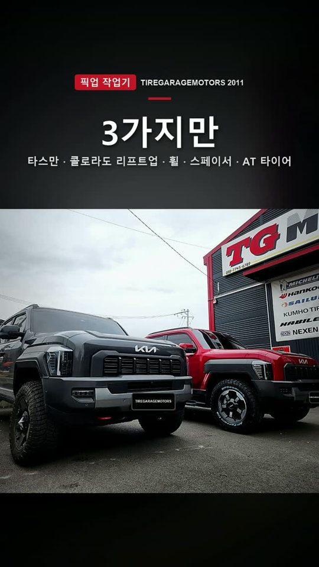
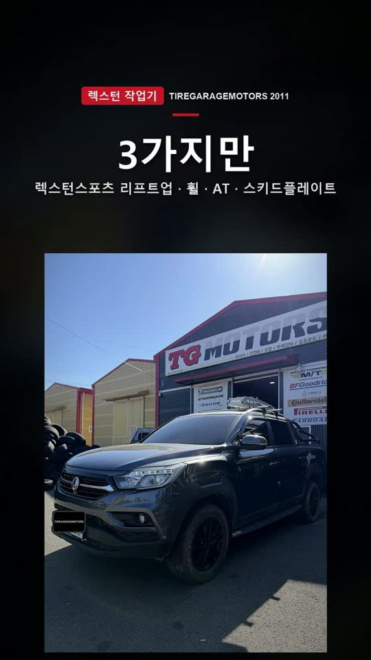
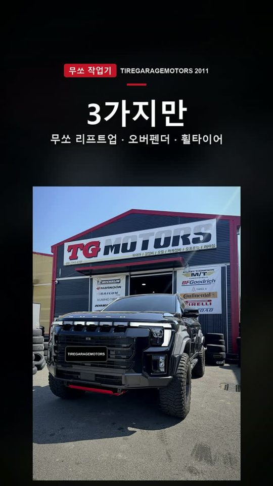

자주 묻는 질문 · 마지막 수정 2026-11-28 · 타이어게러지모터스 (남양주 진접, 2011년부터 튜닝·정비)
오프로드 타이어 AT와 MT, 뭘 골라야 하나요?
고르는 기준
- 평소 주행: 도로 위주면 AT, 험로·진흙이 많으면 MT
- 소음·승차감: AT가 조용하고 부드러워요
- 크기: 사이즈업을 하면 리프트업·오버휀다·구조변경을 같이 확인해요
- 적재: 짐이 많은 밴·캠핑카는 하중 규격(예: 10P)을 확인해요
우리 매장 장착 사례
- BF굿리치 KO3 · 글래디에이터, 렉스턴 스포츠 칸 275/70R18, 타스만 X-PRO 265/70R17, 랭글러 35인치
- 한국 다이나프로 AT2 익스트림 · 랭글러 285/70R17, 타스만, PV5
- 레이다 · F150 AT-5 올터레인, PV5 레니게이드 AT 215/65R16, F150 레니게이드 RT+
- 캡센 올터레인 215/70R16 · PV5 카고
- 사일룬 테라맥스 AT2 10P · 르노 마스터, 넥센 ATX 265/50R20 · 렉스턴 스포츠
- 오프로드 M/T 타이어 · 렉스턴 스포츠, 무쏘, 타스만 X-PRO
자주 묻는 질문
- AT 타이어도 소음이 큰가요?
- 일반 승용 타이어보다는 조금 있지만 MT보다 훨씬 조용해요. 랭글러에 한국 AT2 익스트림을 달아 소음을 줄인 사례도 있어요.
- 재고가 있나요?
- 주요 브랜드 AT·MT 타이어 재고를 보유하고 있어 대부분 당일 장착이 가능해요. 사이즈와 재고는 전화로 먼저 확인해 주세요.
관련 작업 영상

타스만 X-PRO 4륜 얼라인먼트, 머드 타이어 세팅 후 앞뒤 각도 맞추기
타스만에 오프로드 타이어 끼우셨죠? 얼라인먼트는 주기적으로 꼭 점검하세요. · 머드 타이어에 오버휀다까지 한 타스만 X-PRO, 네 바퀴 각도를 전부 다시 쟀습니다. · 3D 얼라인먼트로 네 바퀴를 한 번에 잽니다. 타이어가 커지면 바퀴 각도도 같이 틀어져요.

PV5 카고 휠 교환 · AT 타이어 장착, 영국 FOX 16인치 + 215/70R16
PV5 카고, 휠 교환 · AT 타이어 장착했습니다. 하중 1,500kg부터 확인했습니다. · 순정 휠커버를 떼고 영국 FOX 정품 휠로 교환, AT 타이어를 장착한 PV5 카고입니다. 차는 그대로, 휠 · 타이어만 바꿨습니다. · FOX 정품 휠 - 1996년부터 이어온 영국 휠 브랜드. 16인치 무…

스타리아 3가지만 바꿨습니다, 빅풋 스프링 · 블랙 휠 · AT
스타렉스 · 스타리아, 3가지만 바꿨습니다. · 리프트업 - 빅풋 스프링 · AT 타이어 - 올터레인 패턴

타스만 · 콜로라도 3가지만 바꿨습니다, 리프트업 · 스페이서 · AT
타스만 · 콜로라도, 3가지만 바꿨습니다. · 리프트업 - 스프링 · 휠 · 스페이서 - 트랙을 넓혀 꽉 찬 자세

디스커버리4 3가지만 바꿨습니다, 리프트 링크 · 블랙 휠 · MT
디스커버리4, 3가지만 바꿨습니다. · 리프트 링크 - 에어서스 차고 업, 장착 뒤 얼라인먼트 · MT · AT 타이어

렉스턴스포츠 3가지만 바꿨습니다, 리프트업 · AT · 스키드
렉스턴스포츠 · 무쏘스포츠 차주님, 3가지만 바꿨습니다. · 리프트업 - 가브리엘 쇼바 · 스프링, 코일오버 · 휠 · AT 타이어 - 블랙 휠 + 올터레인

무쏘 3가지만 바꿨습니다, 리프트업 · 오버펜더 · MT
렉스턴스포츠 · 무쏘스포츠 차주님, 3가지만 바꿨습니다. · 리프트업 - 스프링 · 쇼크 교체, 장착 뒤 얼라인먼트 · 오버펜더 - 휠하우스를 넓혀 큰 타이어도 여유 있게

PV5 3가지만 바꿨습니다, 리프트업 · 휠 · AT
PV5, 3가지만 바꿨습니다. · 리프트업 - 스프링 교체로 차고 업, 장착 뒤 얼라인먼트 · 휠 - PV5 사이즈 · 옵셋에 맞는 휠
작업 후기 (네이버 블로그)
- 기아 PV5 카고 휠타이어 교체! FOX 16인치 휠 + 캡센 AT 215 70 16 장착 후기 (남양주 타이어게러지모터스) 2026-11-26
- 남양주타이어 글래디에이터 타이어 교체! BF굿리치 KO3 장착 및 3D얼라이먼트 작업 2026-11-24
- G4렉스턴 허브스페이스 장착 및 AT타이어 교체! 전륜 20mm 후륜 25mm 세팅｜남양주 타이어게러지모터스 2026-11-20
- 기아 PV5 카고 AT타이어 장착! 캡센 올터레인 215/70R16 남양주 타이어게러지모터스 2026-11-19
- PV5 카고 빅풋스프링 1.5인치·2인치 작업! 메소드 블랙 휠 & 한국타이어 AT2 익스트림 장착｜남양주 타이어게러지모터스 2026-11-16
- 남양주 랭글러JL 타이어 교체! 소음 줄이고 승차감 높이는 한국타이어 AT2 익스트림 장착 2026-11-10
- 남양주 타이어게러지모터스 르노마스터 AT타이어 교체! 사일룬 테라맥스 AT2 10P 장착 후기 2026-11-09
- PV5 카고 튜닝 추천! 빅풋스프링 1.5인치·2인치 세팅과 메소드 블랙휠 트라이AT타이어 장착｜남양주 타이어게러지모터스 2026-11-06